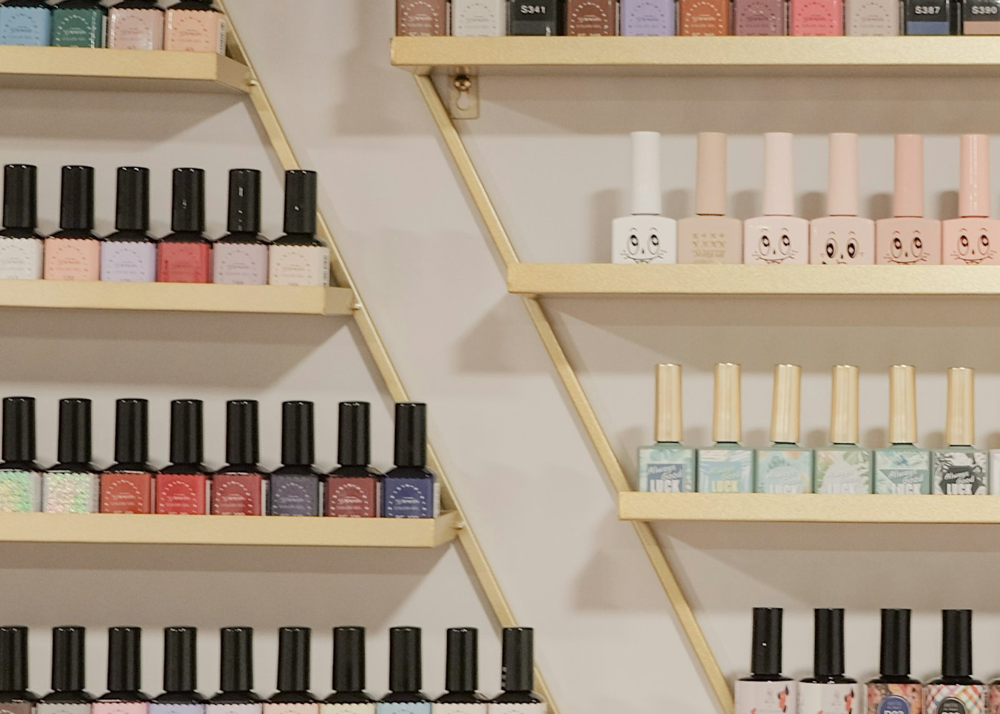
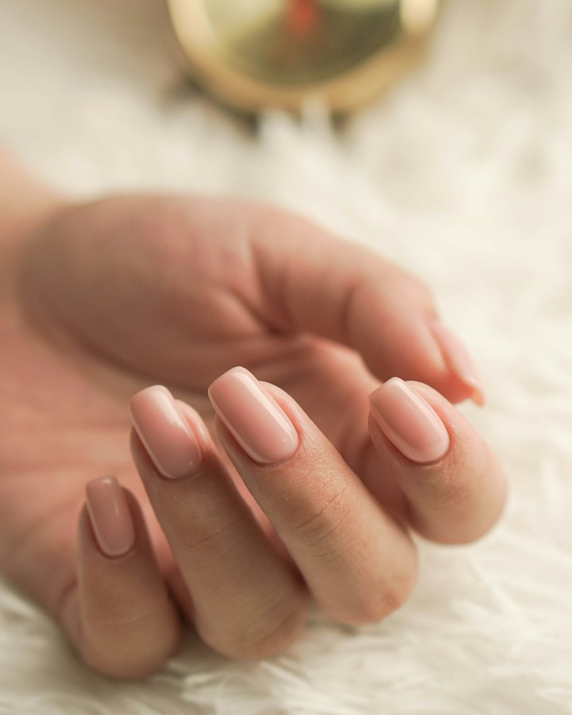
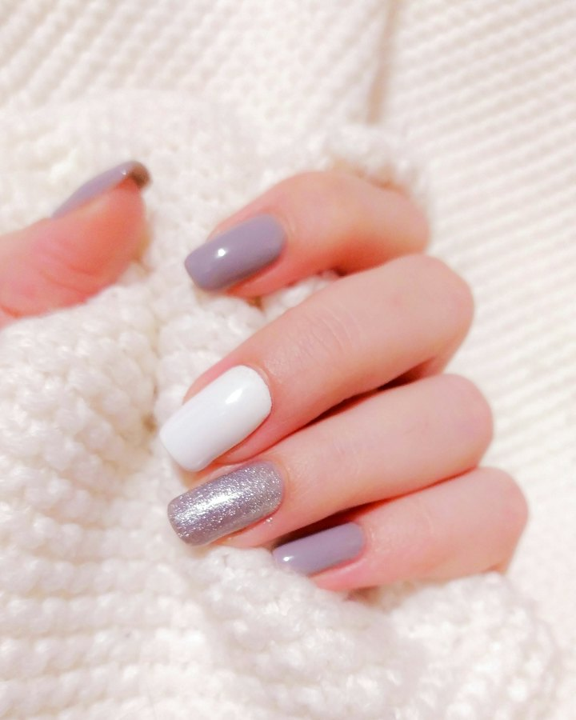
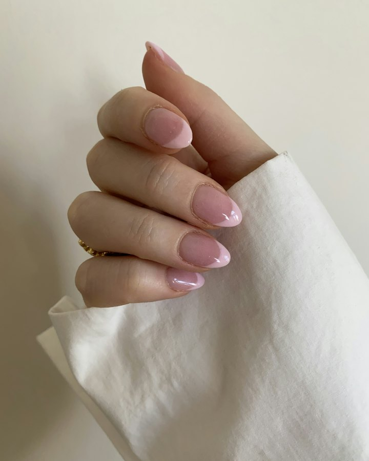
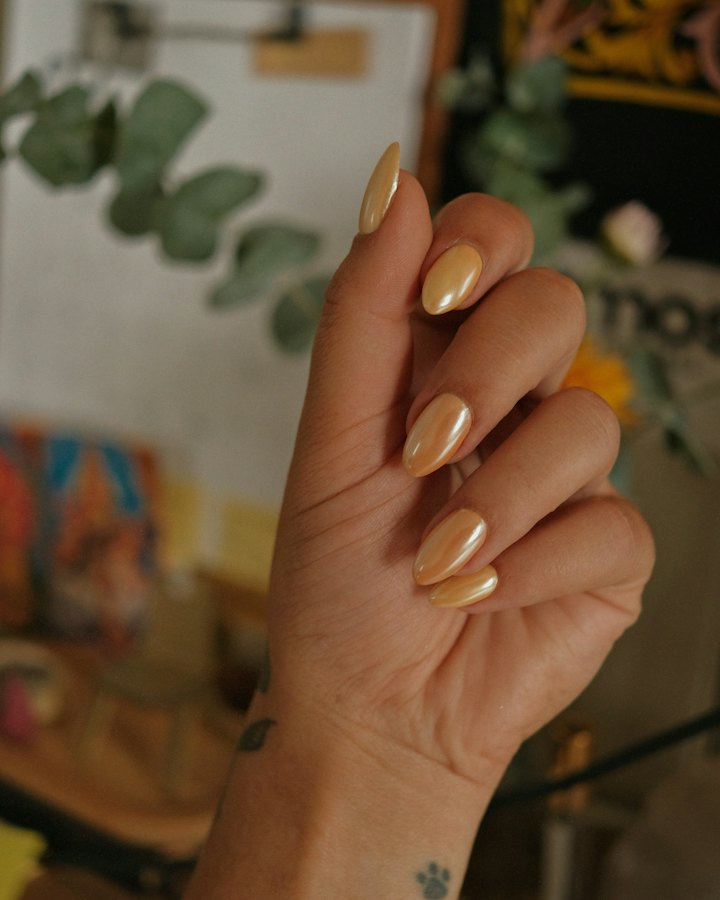
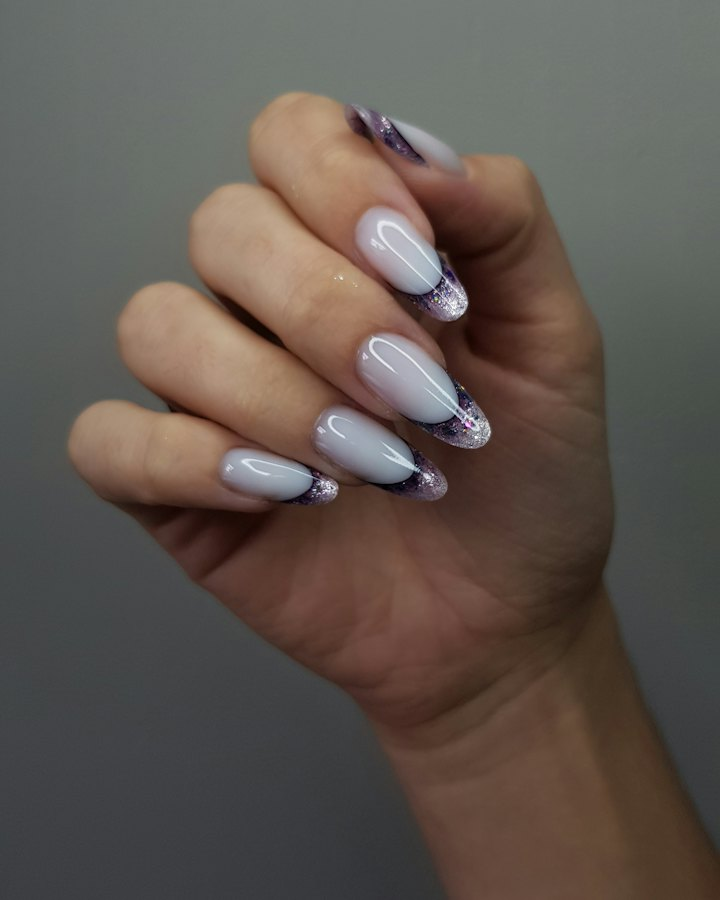
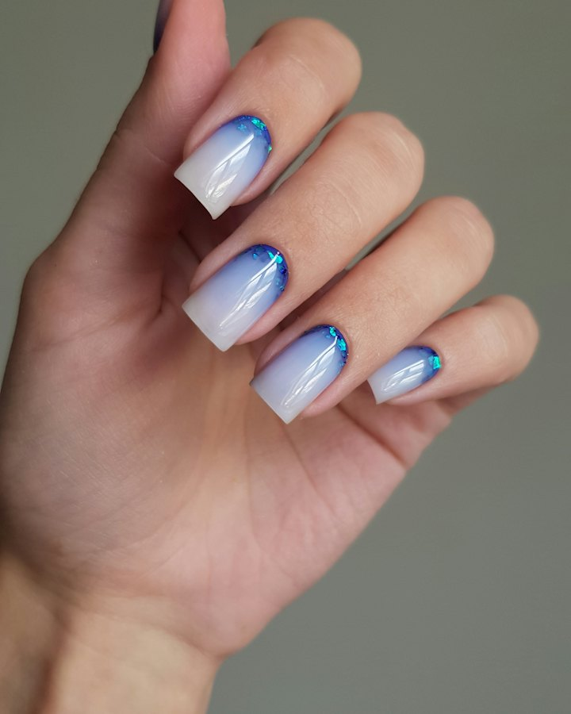
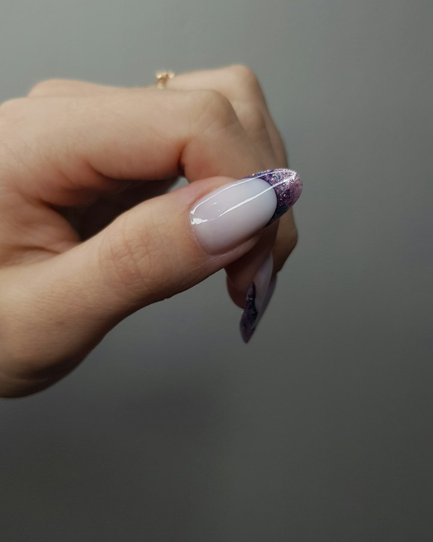
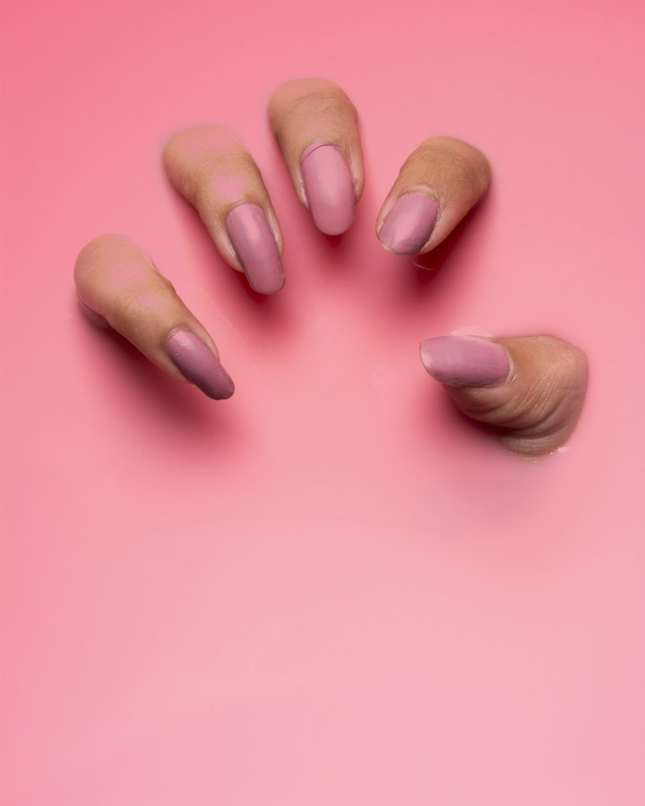

Qual cor vai hoje?
Igual à cartela da bancada: toque numa ponta para ver a cor de perto. Ela já entra no seu pedido de horário.
Cores de exemplo. No site final entram os esmaltes e géis que a Mayara tem na cartela.
Monte o seu horário
Toque nos serviços que você quer. A ficha se monta com a cor, o dia e o período, e vai pronta para o WhatsApp da Mayara.

Seis anos cuidando de unha, uma cliente por vez
A WM Nails é o espaço da Mayara Lopes, manicure profissional há 6 anos, na Rua Ângelo Ortolan, no Machadinho. Atendimento com hora marcada, sem correria, do esmalte comum ao alongamento em gel.
Texto de exemplo. No site final entram a história da Mayara, os cursos e o jeito de trabalhar da WM Nails.
Como marcar
Escolha e chame
Monte o pedido aqui no site ou mande mensagem direto no WhatsApp.
Combine o horário
A Mayara responde com os horários livres e o valor do serviço.
Venha fazer a unha
No dia, é só chegar na Rua Ângelo Ortolan, 150, no Machadinho.
Para se inspirar
Ver as unhas da WM no Instagram







Fotos ilustrativas. No site final entram as unhas feitas pela Mayara.
Horário e endereço
- SegundaFechado
- Terça8h às 19h
- Quarta8h às 19h
- Quinta8h às 19h
- Sexta7h às 18h
- Sábado8h às 14h
- DomingoFechado
- Endereço
- R. Ângelo Ortolan, 150
Lot. Industrial Machadinho, Americana – SP, 13478-710 - (19) 99695-5056
- @wmunhas
Horário conforme o perfil da WM Nails no Fresha.